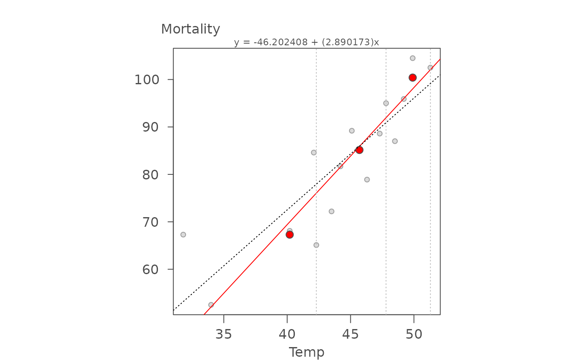
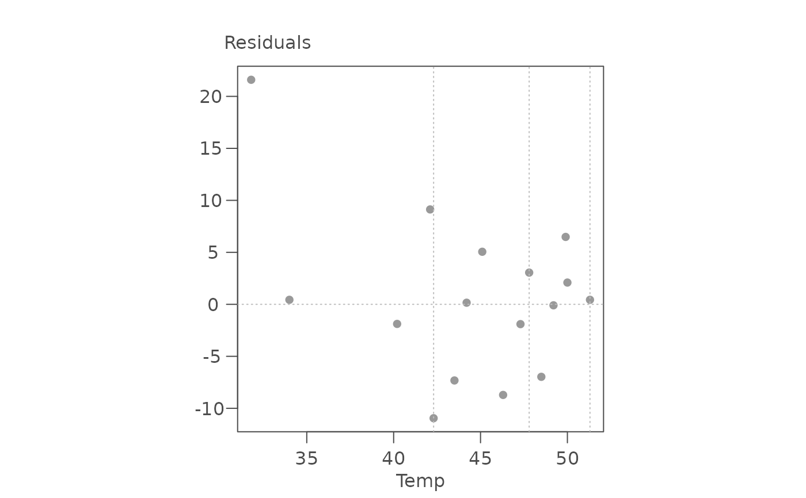
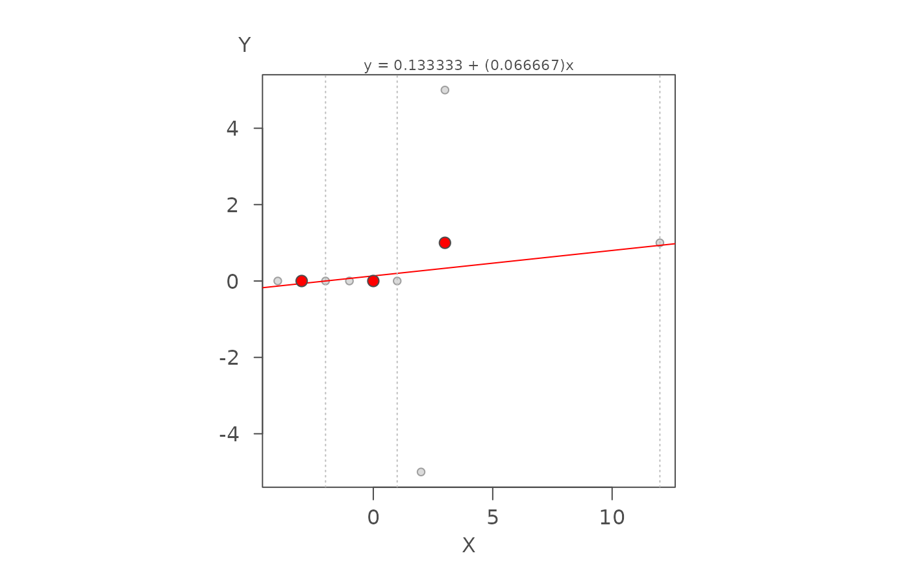

eda_rline is an R implementation of Hoaglin, Mosteller
and Tukey's resistant line technique outlined in chapter 5 of
"Understanding Robust and Exploratory Data Analysis" (Wiley, 1983).
Arguments
- dat
Data frame.
- x
Column assigned to the x axis.
- y
Column assigned to the y axis.
- px
Power transformation to apply to the x-variable.
- py
Power transformation to apply to the y-variable.
- tukey
Boolean determining if a Tukey transformation should be adopted.
- maxiter
Maximum number of iterations to run. (FALSE adopts a Box-Cox transformation)
Value
Returns a list of class eda_rlinewith the following named
components:
a: Interceptb: Sloperes: Residuals sorted on x-valuesx: Sorted x valuesy: y values following sorted x-valuesxmed: Median x values for each thirdymed: Median y values for each thirdindex: Index of sorted x values defining upper boundaries of each thirdsxlab: X label nameylab: Y label nameiter: Number of iterations
Details
This is an R implementation of the RLIN.F FORTRAN code in
Velleman et. al's book. This function fits a robust line using a
three-point summary strategy whereby the data are split into three equal
length groups along the x-axis and a line is fitted to the medians defining
each group via an iterative process. This function should mirror the
built-in stat::line function in its fitting strategy but it outputs
additional parameters.
See the accompanying vignette Resistant Line for a detailed
breakdown of the resistant line technique.
References
Velleman, P. F., and D. C. Hoaglin. 1981. Applications, Basics and Computing of Exploratory Data Analysis. Boston: Duxbury Press.
D. C. Hoaglin, F. Mosteller, and J. W. Tukey. 1983. Understanding Robust and Exploratory Data Analysis. Wiley.
Examples
# This first example uses breast cancer data from "ABC's of EDA" page 127.
# The output model's parameters should closely match: Y = -46.19 + 2.89X
# The plots shows the original data with a fitted resistant line (red)
# and a regular lm fitted line (dashed line), and the modeled residuals.
# The 3-point summary dots are shown in red.
M <- eda_rline(neoplasms, Temp, Mortality)
M
#> $b
#> [1] 2.890173
#>
#> $a
#> [1] -46.20241
#>
#> $res
#> [1] 45.57582 24.41744 22.09836 33.10703 13.02900 16.66079 24.13767 29.03651
#> [9] 15.26830 22.07813 27.03304 17.00992 23.88680 30.46368 26.07466 24.41744
#>
#> $x
#> [1] 31.8 34.0 40.2 42.1 42.3 43.5 44.2 45.1 46.3 47.3 47.8 48.5 49.2 49.9 50.0
#> [16] 51.3
#>
#> $y
#> [1] 67.3 52.5 68.1 84.6 65.1 72.2 81.7 89.2 78.9 88.6 95.0 87.0
#> [13] 95.9 104.5 100.4 102.5
#>
#> $xmed
#> [1] 40.2 45.7 49.9
#>
#> $ymed
#> [1] 67.30 85.15 100.40
#>
#> $index
#> [1] 5 11 16
#>
#> $xlab
#> [1] "Temp"
#>
#> $ylab
#> [1] "Mortality"
#>
#> $px
#> [1] 1
#>
#> $py
#> [1] 1
#>
#> $iter
#> [1] 4
#>
#> attr(,"class")
#> [1] "eda_rline"
# Plot the output (red line is the resistant line)
plot(M)
# Add a traditional OLS regression line (dashed line)
abline(lm(Mortality ~ Temp, neoplasms), lty = 3)

# Plot the residuals
plot(M, type = "residuals")

# This next example uses Andrew Siegel's pathological 9-point dataset to test
# for model stability when convergence cannot be reached.
M <- eda_rline(nine_point, X, Y)
plot(M)
